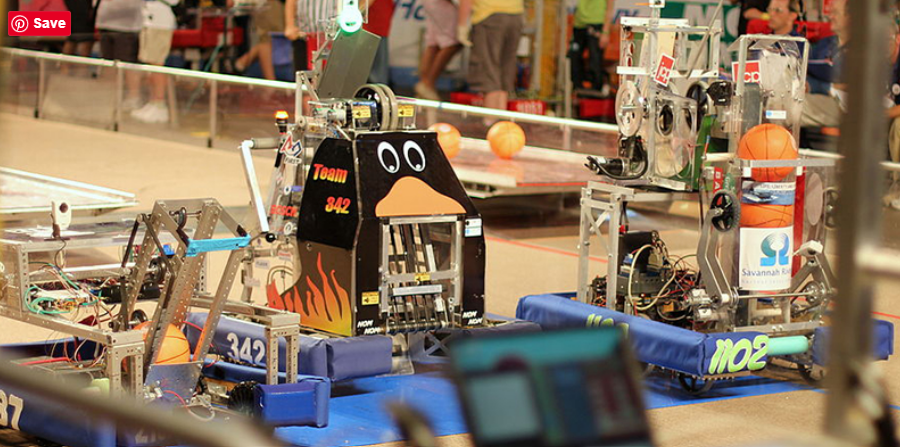

About Us:

Robotics Club Definition
A robotics club is a gathering of students who are interested in learning about and working with robots. At school, robotics clubs typically take place after school, in a classroom, and are moderated by a member of the teaching staff or school administration.
At robotics competitions, teams of students must design and build a robot that can compete against opponents in a series of specific challenges.
Students develop and program their robot in the weeks before the event, adhering to list of preset rules and regulations. Much like traditional sporting events, these robotics competitions draw large crowds who gather to see which robot will best perform the task it has set out to complete.
Local competitions might attract a few teams, whereas international competitions draw thousands of students from all over the world.
What do you do in robotics club?
It differs by school or organization, but here's a general overview of what you do in a robotics club:
Meet regularly to go over housekeeping items (important dates, etc.)
Discuss upcoming "build" needs for competitions and more
Designate specified roles among club members
Build and program robots for competitions
Who can join a robotics club or team?
Robotics teams target students at almost every age group, starting with kindergarten and going all the way to college and post-grad programs. Same goes for those wanting to start a coding club or any other youth organization, really. Of course, the structure and objectives of these competitions vary greatly depending on the age of the student.
For instance, early education programs introduce kids to robotics and programming concepts, challenging them to start thinking like a robotics engineer by encouraging them to create solutions to fun, kid-friendly problems.
Check out this video introduction to the FIRST LEGO League, a robotics competition for kids ages 6–10. (View other STEM competitions and events.)
On the other end of the spectrum are highly competitive teen and college-age programs, where students train year-round to prepare for tournaments.
When and where are meetings and events held?
Your student can participate in local, regional, national, and even international robotics competitions. Programs are held year-round, though there are competition “seasons” for some organizations. While many events are in-person, there are some online challenges available.
The benefits of joining a robotics team
Talk to any robotics team member (or their parents!) and you’ll hear tons of reasons for joining a team: from fueling students’ passions and learning professionalism to participating in a sport where everyone can turn pro, and more.
Scholarships
This benefit is for both your child and your bank account. Joining a robotics club can open the door to many scholarship opportunities for your child. Many of the robotics competition organizations offer their own scholarships, and in addition, the skills your student learns will make him or her more likely to qualify for other robotics-related scholarships offered by colleges or private companies. FIRST Robotics alone boasts $30 million in scholarships available to their participants.